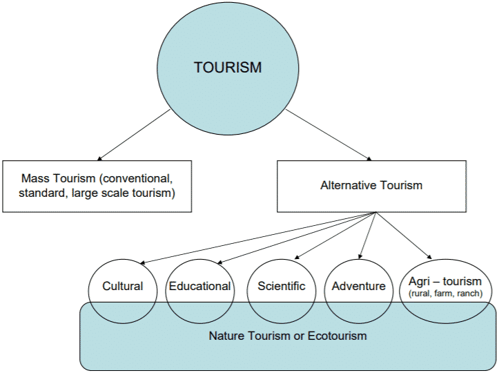
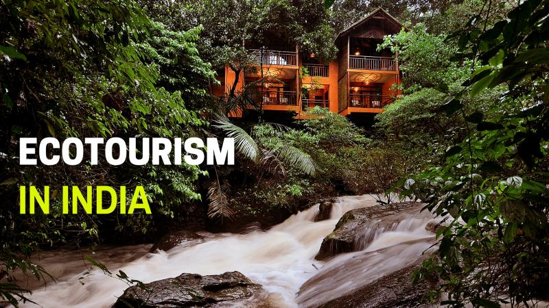
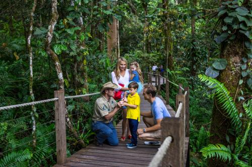

Ecotourism or sustainable tourism can be defined by a variety of travel practices, but it all comes down to a general set of ideas. As an eco-tourist, you decide to travel in a way that shows respect to nature and does not contribute to its degradation.Additionally, ecotourism is a part of environmental conservation and understanding what the needs of the people are who are local to the area so that you can help to improve their quality of life. It also involves learning more about the history of other cities and preserving historical landmarks.
Importance of Ecotourism

Tourism by its very nature affects the natural environment. Sometimes, tourist providers will actively seek out pristine landscapes – think about how attractive an unspoilt beach would be if you’re the first hotel to gain permission to build on it, for example. But it doesn’t take many such hotels before you’re left with a beachfront that bears no resemblance to the paradise that attracted those businesses in the first place.In contrast, ecotourism providers will work hard to ensure that their activities aren’t detrimental to the environment. Using the beach example, they might choose buildings that complement their surroundings, construct low-rise structures that are hidden beneath the tree-line and follow environmentally sound procedures when it comes to energy generation, waste disposal and recycling.
Types of Ecotourism

Promoting Ecotourism in India

Ecotourism as a concept is quite interesting. It not only allows you to get one step closer to nature, but also encourages conservation initiatives. Promoting ecotourism in India will lead - Preservation of wildlife and animal's natural habitat,Platform to bring the local tribal community into the limelight and gain some revenue,Development of remote areas surrounding,Revenue that earned through eco-tourism ventures can improve the long-term economic prospects of India,Not only helps in Conservation initiatives but also helps in raising awareness about political and social issues in developing countries,Both local and visitors, become more aware of the surrounding environmental wealth.
India is one of the most diverse country in the world, and that spells magic. Ecotourism in India is a thriving industry owing to the fact that country has managed to save its resplendent natural beauty.The country has a biological park, zoological parks, tea plantations, wildlife sanctuaries, mighty mountains and lush green jungles in its kitty. Being popular for its exclusive nature and tribal population, India is nature's bounty and the best place to stay in the world.: Thenmala in Kerala was the first ecotourism destination in India. Other than Thenmala, there are multiple ecotourism destinations in to choose from: Karnataka, Uttarakhand, Andhra Pradesh, Tamil Nadu, etc.From the dramatic deserts of the Rajasthan to the lush green forest of Cherrapunji, from the mighty Himalayas to the majestic deep blue beaches of the South, India throughout the decade has been a favorite ecotourism destination which hosts the rich flora and fauna.
Enviornmental benefits of Ecotourism
Ecotourism helps protect natural habitats and pristine environments. The wealth of poorer countries is often tied up in natural resources like forests, minerals and land that could be used for agriculture. Exploiting these resources often means altering or destroying wildlife habitats and beautiful natural landscapes. Ecotourism allows countries and communities to build their economies without harming the environment, which means that local wildlife can thrive and visitors can enjoy untouched destinations. To check that vacation accommodation is environmentally friendly, check the accommodation's website for policies on waste management, recycling, renewable energy use and energy efficiency.Local jobs are only one of the economic benefits of ecotourism. As well as providing an income for staff who work at ecotourism sites, ecotourism allows them the opportunity to receive training in skills that can transfer to other areas of employment and even nutrition when they receive meals at work. Surplus income allows workers or their family members to start up small businesses or to pass on the money to other community members by buying local goods and paying for child care and other services. Ecotourism companies can also help give back to the community by offering training in useful skills.
The advantages that ecotourism offer travelers are personal, but their effects are widespread. Through visiting areas of stunning natural beauty, seeing animals in their native habitats and meeting members of local communities, travelers can increase their awareness of the importance of conserving resources and avoiding waste. They're encouraged to live more sustainably at home, and they can also increase their understanding of and sensitivity toward other cultures. Additionally, travelers learn how to help support other communities, not by handing out free gifts like toys and stationery, but by buying local produce and goods. When ecotourists return home, they spread the message to their families, friends and coworkers. Good ecotourism conserves local cultural and biological diversity, promotes the sustainable use of resources and supports local economies through employment and the use of local services. Other factors to look for include empowerment of the local community by shared participation in management, cultural and environmental awareness and minimal impact of tourist activities on local natural resources. To find genuine ecotourism opportunities, search the directories of reputable organizations such as The International Ecotourism Society and Responsible Travel.